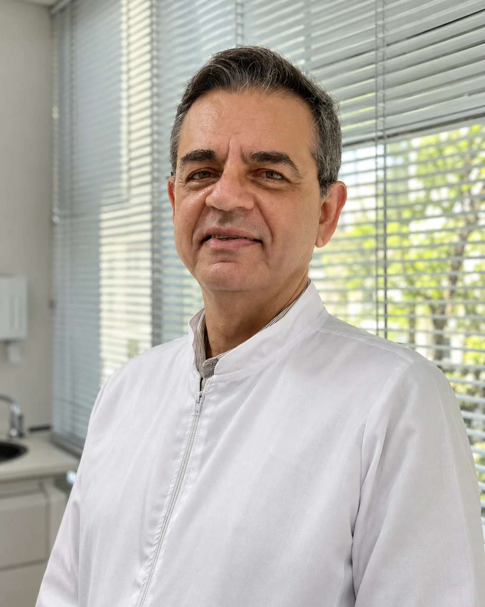
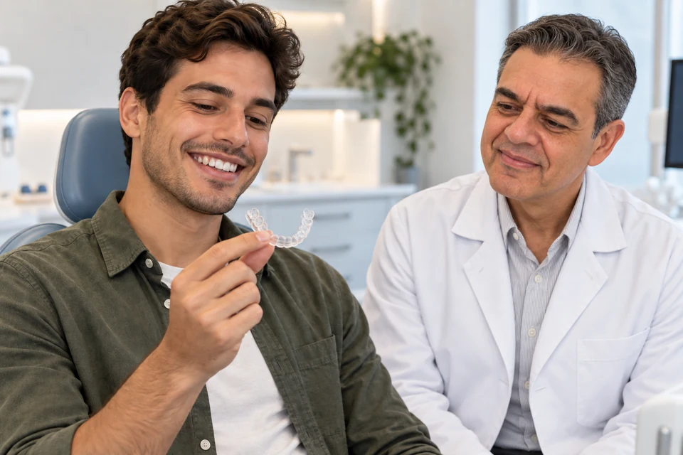
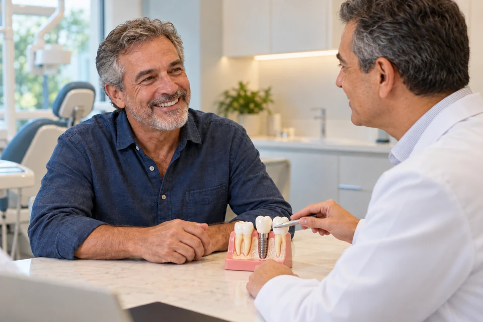
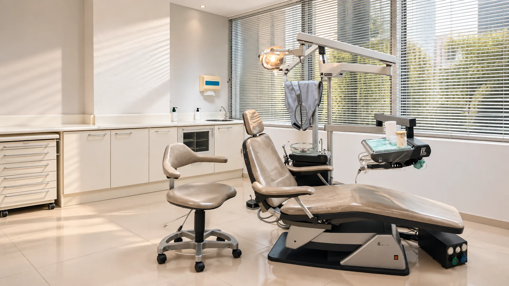
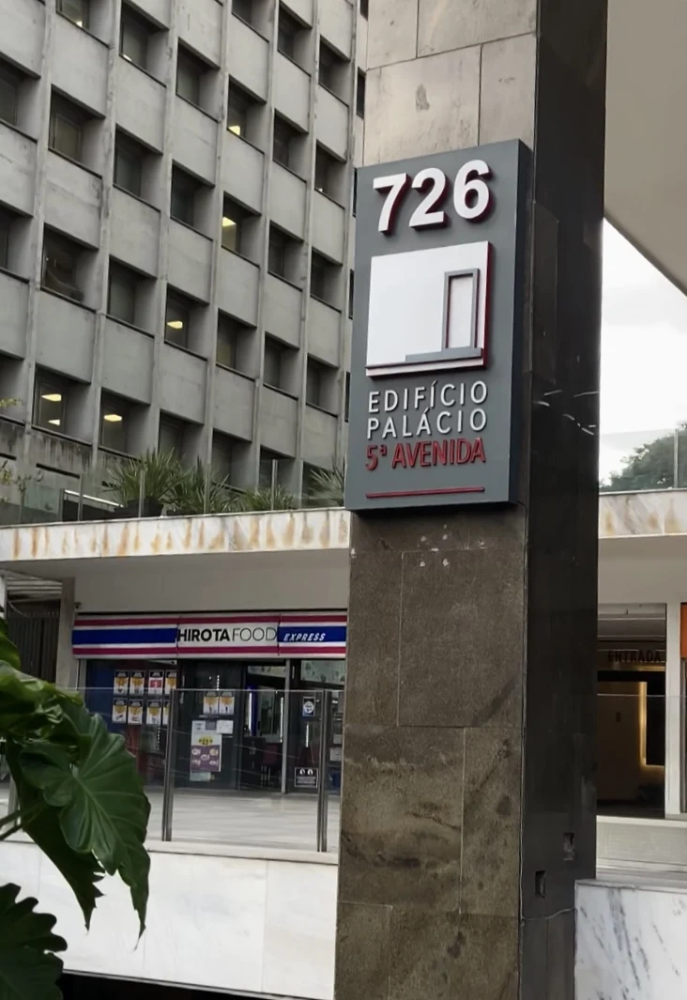

Solicite sua avaliação
Entre em contato pelo WhatsApp, telefone ou e-mail. Consulte os horários e aguarde a confirmação do atendimento.
Avaliação personalizada utilizando o Check up Microscópico Digital, explicações claras, visando o bom entendimento da situação do paciente e do plano de tratamento.
Conheça as possibilidades em Ortodontia, Ortopedia Funcional dos Maxilares, Implantodontia, além de um diagnóstico completo.
Dr. Leon Daghlian · CRO-SP 75104

CONHEÇA O PROFISSIONAL
Dr. Leon Daghlian
Formado pela UMESP em 2001, o Dr. Leon reúne atendimento clínico, experiência em prótese dentária e ensino em Odontologia. Conheça sua formação, as publicações e o trabalho desenvolvido no GEPOO.
Um primeiro olhar sobre o atendimento e o espaço.
Com áudio e legendas no vídeoBaixar vídeo
DESTAQUES

Avaliação do alinhamento dos dentes e da mordida em diferentes fases da vida.
Conhecer esse cuidado
Acompanhamento da mordida e do desenvolvimento dos maxilares durante o crescimento.
Conhecer esse cuidado
Planejamento para repor um ou mais dentes, com indicação e cuidados individualizados.
Conhecer esse cuidado3 áreas em destaque.
Ver todos os tratamentosImagens ilustrativas dos procedimentos.
SUA PRIMEIRA CONSULTA
Conversa, exame clínico e imagens ampliadas.
O check-up microscópico digital é um recurso de apoio à avaliação. As imagens ajudam a observar detalhes e tornam mais clara a conversa sobre os achados e as possibilidades de cuidado.
Saiba como funciona a primeira consultaCOMO COMEÇAR
Da primeira conversa ao planejamento, você participa das decisões sobre o seu cuidado.
Entre em contato pelo WhatsApp, telefone ou e-mail. Consulte os horários e aguarde a confirmação do atendimento.
Conte suas dúvidas e seu histórico de saúde. O exame clínico e as imagens ampliadas ajudam a orientar a conversa sobre o cuidado.
Conheça os achados, as opções e as etapas propostas. Esclareça suas perguntas antes de decidir os próximos passos.

CONHEÇA A DENTEARTE
Conheça o ambiente de atendimento e os detalhes do consultório.
Conhecer a clínica e os equipamentos YouTube
YouTube YouTube
YouTubeCANAL DO DR. LEON
Assista a partir de 2min31s, no ponto selecionado.
Assistir no YouTube YouTube
YouTubeCANAL DO DR. LEON
Assista ao conteúdo no YouTube.
Assistir no YouTube
Sua visita
Prepare sua visita, conheça a avaliação com imagens ampliadas e saiba como solicitar seu atendimento particular.
Ler artigo completo
Informação e atendimento
Uma conversa clara ajuda a entender as alternativas, as etapas e o próximo passo.
Ler artigo completoDÚVIDAS FREQUENTES
Entre em contato pelo WhatsApp (11) 97312-5799, telefone ou e-mail. O atendimento informa a disponibilidade e confirma o horário da consulta.
Link para esta perguntaAvenida Paulista, 726, Conjunto 103 · 1º andar. Cerqueira César · São Paulo — SP. Próximo ao metrô Brigadeiro. Confirme com o atendimento a entrada do edifício e as orientações de chegada ao conjunto 103.
Link para esta perguntaO atendimento ocorre de segunda a sexta, das 9h às 20h, e aos sábados quinzenais, das 8h às 12h, com agendamento. Confirme os sábados disponíveis antes de planejar sua visita.
Link para esta perguntaLeve exames anteriores pertinentes, uma relação dos medicamentos em uso e informações sobre seu histórico de saúde. Anote suas dúvidas e confirme com o atendimento os documentos necessários.
Link para esta perguntaO atendimento informado pela DenteArte é particular. Consulte a equipe sobre o valor da avaliação e as formas de pagamento. O orçamento de um tratamento é definido a partir do planejamento individual.
Link para esta perguntaLOCALIZAÇÃO
Avenida Paulista, 726, Conjunto 103 · 1º andar
Cerqueira César · São Paulo — SP
Procure a identificação do
Edifício Palácio 5ª Avenida.

SEU PRÓXIMO PASSO
Fale com a DenteArte e solicite sua avaliação particular.